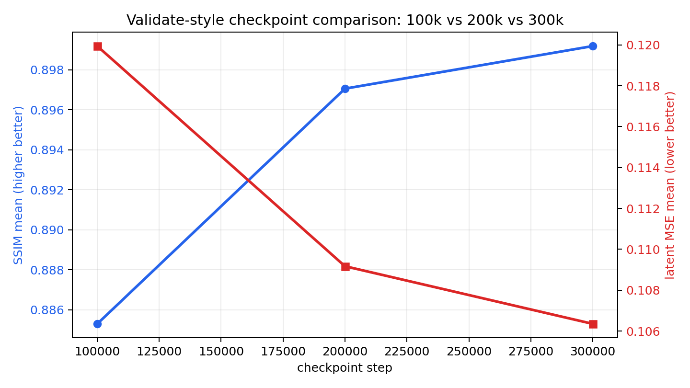
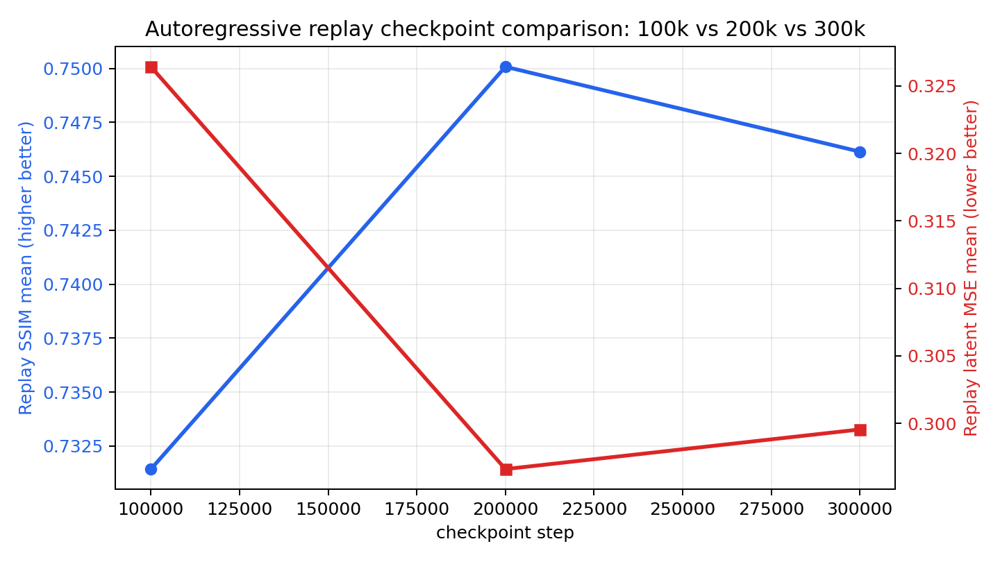
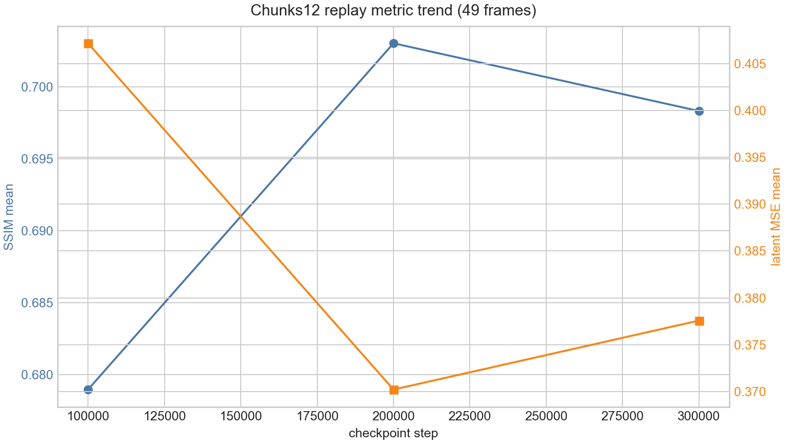
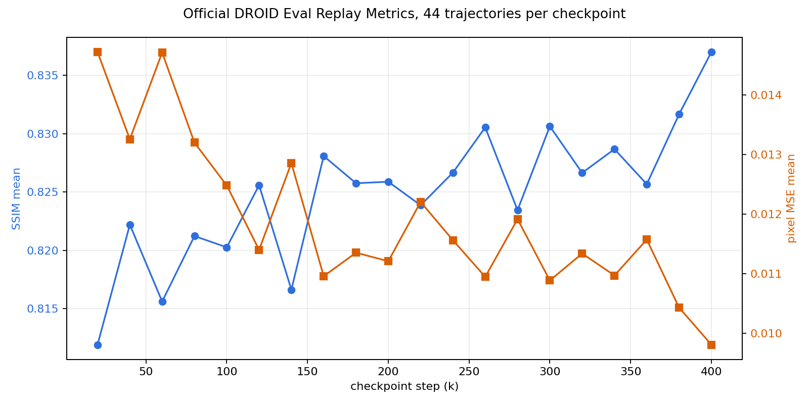

Ctrl-World rollout visual review
Official and Our Checkpoint Rollouts
One page with two clearly separated parts: official Ctrl-World checkpoint rollout results first, then our DreamZero-DROID LeRobot checkpoint rollout results. Videos are folded by task, condition, or sample group; click a row to expand.
Official sectionPolicy-in-loop rollouts using the provided Ctrl-World checkpoint-10000 setup.
Our section100k, 200k, 300k rollout videos, plus the 20-checkpoint official DROID replay metric sweep.
Viewing conventionWhere available: top row is true/recorded future, bottom row is prediction.
PlaybackAll videos default to 1.75x.
Part 1. Official Ctrl-World Checkpoint Rollouts
This preserves the original page content: matched-length policy-in-loop rollouts across seven tasks and longer pred-only pickplace rollouts. The world model is the provided Ctrl-World checkpoint-10000; action source is the OpenPI policy.
44 matched-length + 20 long-horizon videos
Matched-length policy rollouts 7 tasks, 44 videos
Pickplace 10 videos; block-to-plate validation rollouts
Pickplace rollout 2
Pickplace rollout 3
Pickplace rollout 4
Pickplace rollout 5
Pickplace rollout 6
Pickplace rollout 7
Pickplace rollout 8
Pickplace rollout 9
Pickplace rollout 10
Towel fold 10 videos; fold-the-towel validation rollouts
Towel fold rollout 1
Towel fold rollout 2
Towel fold rollout 3
Towel fold rollout 4
Towel fold rollout 5
Towel fold rollout 6
Towel fold rollout 7
Towel fold rollout 8
Towel fold rollout 9
Towel fold rollout 10
Wipe table 5 videos; table wiping validation rollouts
Wipe table rollout 1
Wipe table rollout 2
Wipe table rollout 3
Wipe table rollout 4
Wipe table rollout 5
Tissue 5 videos; pull-one-tissue validation rollouts
Tissue rollout 1
Tissue rollout 2
Tissue rollout 3
Tissue rollout 4
Tissue rollout 5
Close laptop 5 videos; laptop closing validation rollouts
Close laptop rollout 1
Close laptop rollout 2
Close laptop rollout 3
Close laptop rollout 4
Close laptop rollout 5
Stack 5 videos; block stacking validation rollouts
Stack rollout 1
Stack rollout 2
Stack rollout 3
Stack rollout 4
Stack rollout 5
Drawer 4 videos; object-to-drawer validation rollouts
Drawer rollout 1
Drawer rollout 2
Drawer rollout 3
Drawer rollout 4
Long-horizon pred-only pickplace rollouts 2 instruction styles, 20 videos
Explicit sequence 10 videos
Explicit sequence rollout 1
instruction: pick up the blue block and place it in the white plate, then pick up the green block and place it in the white plate
Explicit sequence rollout 2
instruction: pick up the blue block and place it in the white plate, then pick up the green block and place it in the white plate
Explicit sequence rollout 3
instruction: pick up the blue block and place it in the white plate, then pick up the green block and place it in the white plate
Explicit sequence rollout 4
instruction: pick up the blue block and place it in the white plate, then pick up the green block and place it in the white plate
Explicit sequence rollout 5
instruction: pick up the blue block and place it in the white plate, then pick up the green block and place it in the white plate
Explicit sequence rollout 6
instruction: pick up the green block and place it in the white plate, then pick up the blue block and place it in the white plate
Explicit sequence rollout 7
instruction: pick up the green block and place it in the white plate, then pick up the blue block and place it in the white plate
Explicit sequence rollout 8
instruction: pick up the green block and place it in the white plate, then pick up the blue block and place it in the white plate
Explicit sequence rollout 9
instruction: pick up the red block and place it in the white plate, then pick up the blue block and place it in the white plate
Explicit sequence rollout 10
instruction: pick up the red block and place it in the white plate, then pick up the blue block and place it in the white plate
Brief conjunction 10 videos
Brief conjunction rollout 1
instruction: put the blue and green blocks in the white plate
Brief conjunction rollout 2
instruction: put the blue and green blocks in the white plate
Brief conjunction rollout 3
instruction: put the blue and green blocks in the white plate
Brief conjunction rollout 4
instruction: put the blue and green blocks in the white plate
Brief conjunction rollout 5
instruction: put the blue and green blocks in the white plate
Brief conjunction rollout 6
instruction: put the green and blue blocks in the white plate
Brief conjunction rollout 7
instruction: put the green and blue blocks in the white plate
Brief conjunction rollout 8
instruction: put the green and blue blocks in the white plate
Brief conjunction rollout 9
instruction: put the red and blue blocks in the white plate
Brief conjunction rollout 10
instruction: put the red and blue blocks in the white plate
Part 2. Our Trained Checkpoint Rollouts
These are the validate, replay, and long replay visualizations for our DreamZero-DROID LeRobot Ctrl-World checkpoints at 100k, 200k, and 300k, followed by the official DROID replay metric sweep across 20 intermediate checkpoints. The video blocks keep the same eight validation sample indices for each checkpoint.
72 videos + 20-ckpt replay metrics
Validate video generation 3 checkpoints x 8 samples
Short fixed validation windows. The model predicts future frames conditioned on true history and recorded actions.
| checkpoint | n | latent MSE | SSIM |
|---|---|---|---|
| 100,000 | 8 | 0.1199 | 0.8853 |
| 200,000 | 8 | 0.1092 | 0.8971 |
| 300,000 | 8 | 0.1064 | 0.8992 |

| sample | 100k | 200k | 300k |
|---|---|---|---|
| sample 0episode start |
show videoPut the crisps' packet in the bowl |
show videoPut the crisps' packet in the bowl |
show videoPut the crisps' packet in the bowl |
| sample 128episode start |
show videoPick up the yellow cup and put it on top of the toaster |
show videoPick up the yellow cup and put it on top of the toaster |
show videoPick up the yellow cup and put it on top of the toaster |
| sample 512episode start |
show videoGet the red sauce bottle and put in the blue cup |
show videoGet the red sauce bottle and put in the blue cup |
show videoGet the red sauce bottle and put in the blue cup |
| sample 1024episode start |
show videoPut the grey building block on the table |
show videoPut the grey building block on the table |
show videoPut the grey building block on the table |
| sample 2048episode start |
show videoTurn the iron to the right and then press on the button of the iron |
show videoTurn the iron to the right and then press on the button of the iron |
show videoTurn the iron to the right and then press on the button of the iron |
| sample 4096episode start |
show videoPick up the square plush toy on the left and put it on top of the square push toy in the middle |
show videoPick up the square plush toy on the left and put it on top of the square push toy in the middle |
show videoPick up the square plush toy on the left and put it on top of the square push toy in the middle |
| sample 8192episode start |
show videoUse the right white towel to wipe the pan |
show videoUse the right white towel to wipe the pan |
show videoUse the right white towel to wipe the pan |
| sample 16384episode start |
show videoPick up the elastic and put it around the bottle |
show videoPick up the elastic and put it around the bottle |
show videoPick up the elastic and put it around the bottle |
Replay, 25 frames 3 checkpoints x 8 samples
Autoregressive replay with recorded action chunks and predicted latents fed back into later chunks.
| checkpoint | n | latent MSE | SSIM |
|---|---|---|---|
| 100,000 | 8 | 0.3264 | 0.7314 |
| 200,000 | 8 | 0.2966 | 0.7501 |
| 300,000 | 8 | 0.2995 | 0.7461 |

| sample | 100k | 200k | 300k |
|---|---|---|---|
| sample 0episode 99 start 0 |
show videoPut the crisps' packet in the bowl |
show videoPut the crisps' packet in the bowl |
show videoPut the crisps' packet in the bowl |
| sample 128episode 399 start 8 |
show videoPick up the yellow cup and put it on top of the toaster |
show videoPick up the yellow cup and put it on top of the toaster |
show videoPick up the yellow cup and put it on top of the toaster |
| sample 512episode 899 start 37 |
show videoGet the red sauce bottle and put in the blue cup |
show videoGet the red sauce bottle and put in the blue cup |
show videoGet the red sauce bottle and put in the blue cup |
| sample 1024episode 1899 start 14 |
show videoPut the grey building block on the table |
show videoPut the grey building block on the table |
show videoPut the grey building block on the table |
| sample 2048episode 3299 start 49 |
show videoTurn the iron to the right and then press on the button of the iron |
show videoTurn the iron to the right and then press on the button of the iron |
show videoTurn the iron to the right and then press on the button of the iron |
| sample 4096episode 6499 start 24 |
show videoPick up the square plush toy on the left and put it on top of the square push toy in the middle |
show videoPick up the square plush toy on the left and put it on top of the square push toy in the middle |
show videoPick up the square plush toy on the left and put it on top of the square push toy in the middle |
| sample 8192episode 11799 start 44 |
show videoUse the right white towel to wipe the pan |
show videoUse the right white towel to wipe the pan |
show videoUse the right white towel to wipe the pan |
| sample 16384episode 22999 start 15 |
show videoPick up the elastic and put it around the bottle |
show videoPick up the elastic and put it around the bottle |
show videoPick up the elastic and put it around the bottle |
Long replay, 49 frames 3 checkpoints x 8 samples
Longer autoregressive replay using the same checkpoint/sample grid, with rollout_chunks=12.
| checkpoint | n | latent MSE | SSIM |
|---|---|---|---|
| 100,000 | 8 | 0.4072 | 0.6789 |
| 200,000 | 8 | 0.3702 | 0.7030 |
| 300,000 | 8 | 0.3776 | 0.6983 |

| sample | 100k | 200k | 300k |
|---|---|---|---|
| sample 0episode 99 start 0 |
show videoPut the crisps' packet in the bowl |
show videoPut the crisps' packet in the bowl |
show videoPut the crisps' packet in the bowl |
| sample 128episode 399 start 8 |
show videoPick up the yellow cup and put it on top of the toaster |
show videoPick up the yellow cup and put it on top of the toaster |
show videoPick up the yellow cup and put it on top of the toaster |
| sample 512episode 899 start 37 |
show videoGet the red sauce bottle and put in the blue cup |
show videoGet the red sauce bottle and put in the blue cup |
show videoGet the red sauce bottle and put in the blue cup |
| sample 1024episode 1899 start 14 |
show videoPut the grey building block on the table |
show videoPut the grey building block on the table |
show videoPut the grey building block on the table |
| sample 2048episode 3299 start 49 |
show videoTurn the iron to the right and then press on the button of the iron |
show videoTurn the iron to the right and then press on the button of the iron |
show videoTurn the iron to the right and then press on the button of the iron |
| sample 4096episode 6499 start 24 |
show videoPick up the square plush toy on the left and put it on top of the square push toy in the middle |
show videoPick up the square plush toy on the left and put it on top of the square push toy in the middle |
show videoPick up the square plush toy on the left and put it on top of the square push toy in the middle |
| sample 8192episode 11799 start 44 |
show videoUse the right white towel to wipe the pan |
show videoUse the right white towel to wipe the pan |
show videoUse the right white towel to wipe the pan |
| sample 16384episode 22999 start 15 |
show videoPick up the elastic and put it around the bottle |
show videoPick up the elastic and put it around the bottle |
show videoPick up the elastic and put it around the bottle |
Official DROID replay metrics 20 checkpoints x 44 trajectories
Official replay evaluation on droid_new_setup_full with interact_num=6. Each checkpoint uses 44 selected trajectories, giving 880 replay videos total; frame metrics are computed from the official side-by-side MP4s where the top row is true video and the bottom row is prediction. The aggregate trend favors later checkpoints, with 400k best on mean SSIM and pixel MSE.
| summary | value |
|---|---|
| checkpoints | 20k to 400k, every 20k |
| videos / frame metric rows | 880 videos / 22,000 frame rows |
| best overall SSIM | 400k, SSIM 0.8370 |
| best overall pixel MSE | 400k, MSE 0.00981 |
| task best SSIM | drawer 400k, laptop 340k, pickplace 400k, stack 400k, tissue 400k, towel_fold 400k, wipe_table 400k |

| checkpoint | videos | SSIM mean | pixel MSE mean | SSIM Q4 - Q1 |
|---|---|---|---|---|
| 20k | 44 | 0.8119 | 0.01472 | -0.1454 |
| 40k | 44 | 0.8222 | 0.01326 | -0.1367 |
| 60k | 44 | 0.8156 | 0.01472 | -0.1587 |
| 80k | 44 | 0.8212 | 0.01320 | -0.1412 |
| 100k | 44 | 0.8203 | 0.01248 | -0.1505 |
| 120k | 44 | 0.8256 | 0.01140 | -0.1342 |
| 140k | 44 | 0.8166 | 0.01286 | -0.1520 |
| 160k | 44 | 0.8281 | 0.01096 | -0.1345 |
| 180k | 44 | 0.8258 | 0.01136 | -0.1402 |
| 200k | 44 | 0.8259 | 0.01121 | -0.1448 |
| 220k | 44 | 0.8239 | 0.01221 | -0.1467 |
| 240k | 44 | 0.8267 | 0.01156 | -0.1419 |
| 260k | 44 | 0.8305 | 0.01095 | -0.1353 |
| 280k | 44 | 0.8234 | 0.01192 | -0.1458 |
| 300k | 44 | 0.8306 | 0.01089 | -0.1362 |
| 320k | 44 | 0.8266 | 0.01134 | -0.1441 |
| 340k | 44 | 0.8287 | 0.01097 | -0.1378 |
| 360k | 44 | 0.8257 | 0.01158 | -0.1437 |
| 380k | 44 | 0.8317 | 0.01043 | -0.1334 |
| 400k | 44 | 0.8370 | 0.00981 | -0.1227 |
Raw artifacts: checkpoint_summary.csv, task_checkpoint_summary.csv, and SUMMARY.txt.
Part 3. AgiBot Camera Pose and Ray Visualization
Interactive 3D trajectory visualizations for AgiBot episodes. The ray pages animate camera poses, image planes, and sampled rays; the pose comparison page contrasts GT trajectories with VGGT, VGGT-Omega, Pi3X, and CUT3R before and after Sim3 alignment.
ray cases + pose method comparison
Camera ray trajectory cases task327, task357, task453
These pages check our current AgiBot camera extrinsic interpretation: translation is the camera center in world coordinates, rotation is world-to-camera, and rays are obtained by back-projecting pixels through intrinsics then rotating them into world coordinates.
Camera pose reconstruction comparison raw and Sim3 aligned
This page keeps both coordinate systems: raw method trajectories show each estimator's native scale and frame; Sim3 aligned trajectories show the same estimates after a similarity transform to GT, making trajectory shape errors easier to compare.
Part 4. AgiBot Semantic Mask Review
Qualitative review pages for the semantic-overlap mask pipeline. The linked subsite includes the newer 20-episode small/medium/large mask overlay videos and the earlier stage-by-stage mask construction review.
links to mask review pages
This part is kept as links only so the main rollout overview remains lightweight. Use the linked pages for full videos, mask-size comparison, GroundingDINO proposals, SigLIP2/DINOv2 crop matching, and local latent-grid mask visualizations.